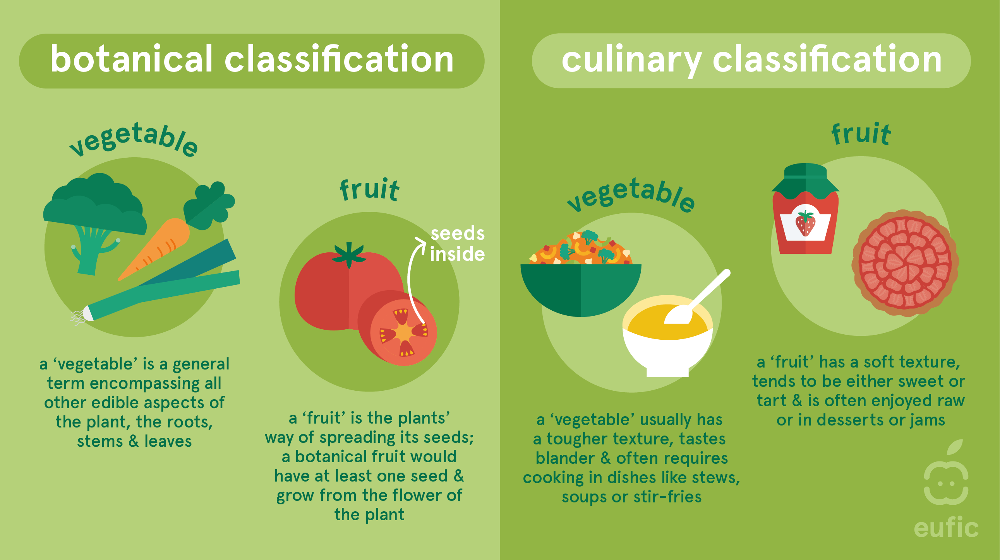
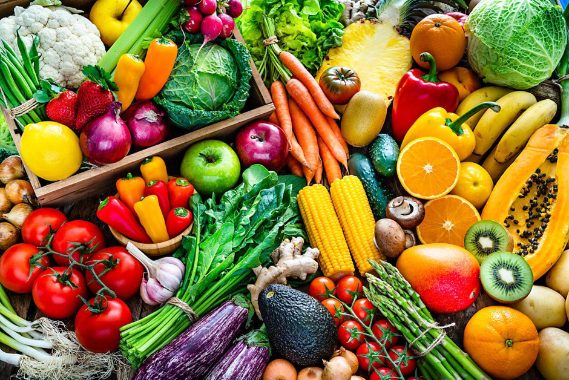
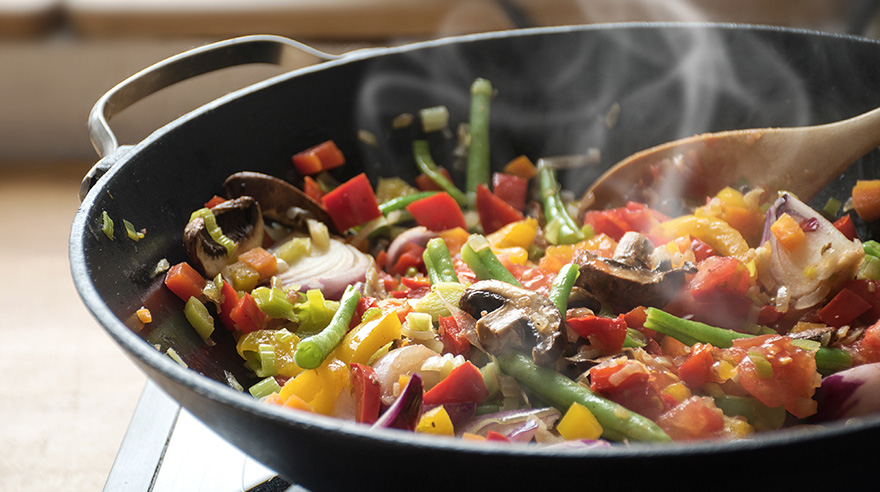
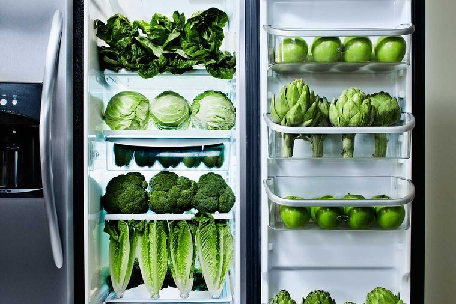

Vegetables Guide
Introduction to Vegetables
Vegetables are not only delicious but also packed with essential nutrients that are vital for your overall health. From the vibrant greens of kale to the earthy flavors of root vegetables, they offer a variety of tastes and textures that can enhance any meal.
Why Vegetables is Essential?
Health Benefits
Vegetables are packed with vitamins, minerals, and fiber, essential for maintaining a healthy body and reducing the risk of chronic diseases.
Variety of Choices
Whether you prefer leafy greens, root vegetables, or something in between, there’s a vegetable for every taste and every dish.
Versatile in Cooking
Vegetables can be roasted, steamed, stir-fried, or even eaten raw, making them one of the most versatile food groups in your kitchen.
Easy to Store
With the right storage techniques, your vegetables can stay fresh for longer, ensuring you always have healthy options at hand.
Recommend Vegetable Dishes
French Fries
French fries are a popular snack or side dish made from potatoes that are cut into strips and deep-fried until crispy and golden. They're often seasoned with salt and can be enjoyed on their own or with a variety of dips like ketchup, mayo, or aioli. French fries are a staple in fast food and casual dining, known for their satisfying crunch and savory taste.
Roasted Broccoli
Roasted broccoli is a simple yet delicious side dish where broccoli florets are tossed in olive oil, salt, and pepper, then roasted in the oven until tender and slightly crispy. The roasting process caramelizes the natural sugars in the broccoli, enhancing its flavor and giving it a satisfying texture. It’s a healthy and flavorful option that pairs well with a variety of main dishes
.jpeg)
Vegetable Soup
Vegetable soup is a comforting and nutritious dish made by simmering a variety of vegetables, such as carrots, celery, potatoes, and tomatoes, in a savory broth. It's often seasoned with herbs and spices to enhance the flavor. The result is a hearty, flavorful soup that can be enjoyed on its own or as a starter, and it's a great way to incorporate a range of vegetables into your diet.
Fresh Salad
Salad is a versatile dish typically made with a base of fresh greens like lettuce or spinach, and can include a variety of vegetables, fruits, nuts, cheeses, and proteins such as chicken, tofu, or beans. It’s usually dressed with a vinaigrette or creamy dressing. Salads can be served as a light meal, a side dish, or a refreshing complement to main courses, offering a balance of flavors and textures.
Chicken Taco Avocados
Chicken taco avocados are a flavorful and healthy dish where ripe avocados are filled with a mixture of seasoned chicken, often accompanied by ingredients like black beans, corn, tomatoes, and cheese. The creamy avocado serves as a base, while the spiced chicken provides a hearty and satisfying topping. This dish combines the richness of avocado with the zesty flavors of tacos, making it a delicious and nutritious option for a light meal or appetizer.